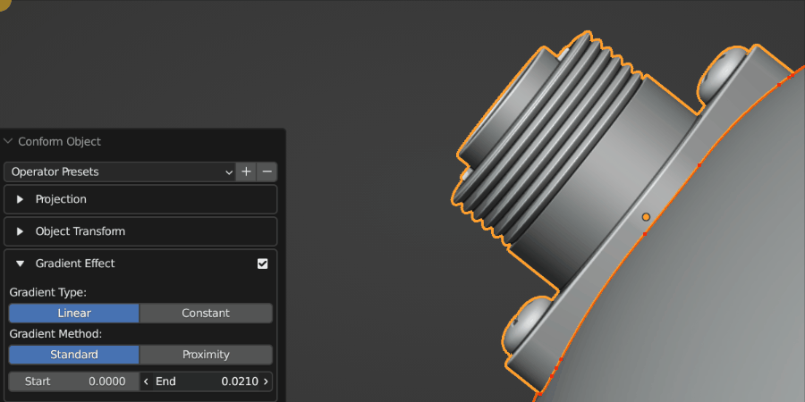
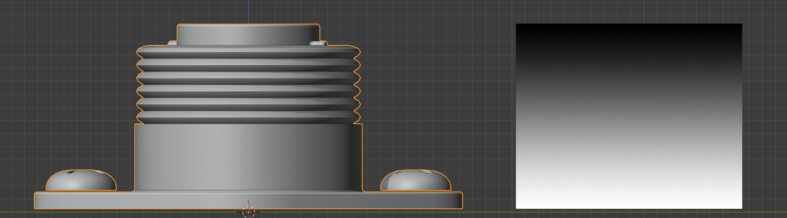
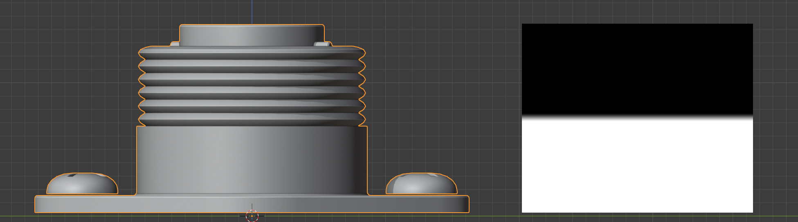
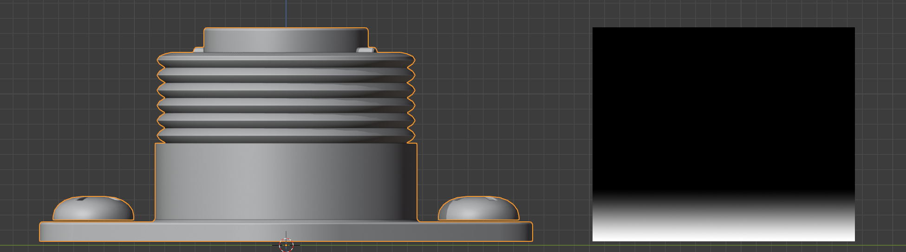
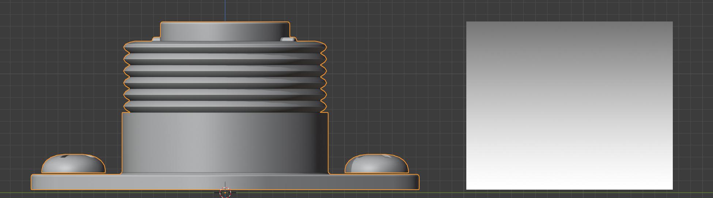
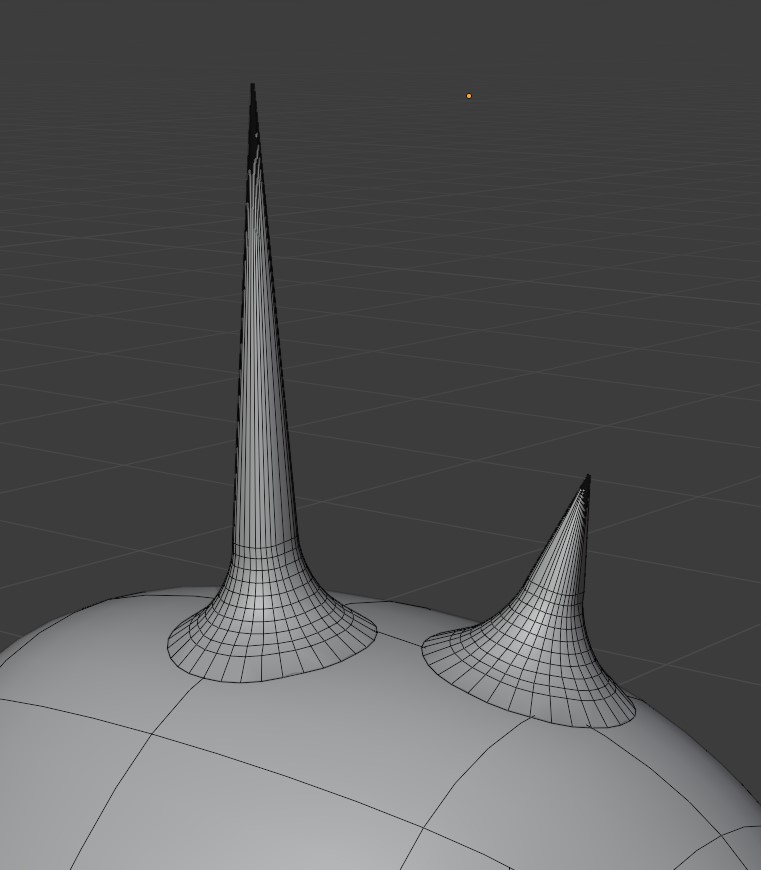
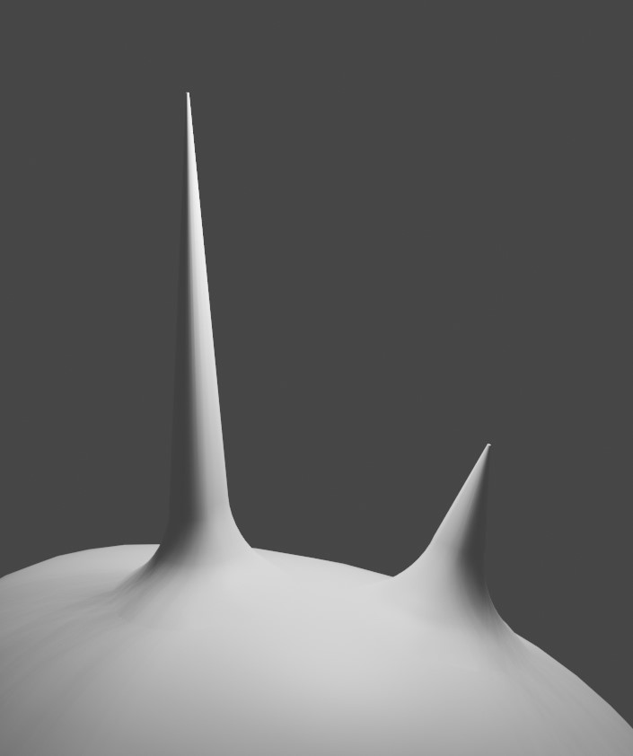

A source object having its projection direction changed by custom mode (Grid mode visibility is turned on). When the direction line hits the Target Object, the Source Object begins to conform.
The different Direction modes control how the direction line is chosen when projecting the Source Object. You may wish to enable Grid visibility to see the different modes working:
Auto: This mode will first try to project the Source Object onto the Target Object using the negative Z direction as usual, and if that fails, it will instead project onto the closest point on the Target Object.
Axis Line: This will project a line from the middle of the Source Object in the local X, Y or Z direction with the object’s rotation taken into account. By default, the projection is in the local -Z direction. If the line misses, a warning message will be displayed.
Nearest: This will project a line from the middle of the Source Object to the closest point on the Target Object. You may need to use the Transform Orientation section to adjust the position of the object whilst it is being projected.
Custom: Specify a X/Y/Z rotation for the projection line.
This is the method used to deform the Sourc eObject. Choose between Grid Mode or Shrinkwrap Mode:
Grid Mode: This mode is described here, and creates a projection grid object which is attached to the source object to create the deformation. The grid object is a regular blender object, parented to the source object.
Visibility: The grid object is hidden by default, but can be revealed by clicking the eye icon next to the Deformation Grid section:
If you wish to hide the Grid again after the Conform Object operation is performed and the panel is gone, expand the Source Object in the Outline View to find the grid object:
Show/Hide Grid: By default, the deformation grid is hidden but it can be displayed if you wish to configure it. This is the same setting as the Eye icon in the Deformation Grid section header.
Applying a Subdivision Surface modifier to the grid for smoothing: Levels 0, 1 and 2 are applied here.
This adds a Subdivision Surface modifier to the grid. This helps smooth the deformation grid over jagged surfaces.
Grid Subdivisions
Subdividing the grid increases the resolution of the deformation.
Not to be confused with grid smoothing, this is the number of vertices in the grid. If you are deforming over particularly smoothed or high resolution meshes, increasing this number can be useful.
Interpolation Falloff: Used on the Surface Deform Modifier for the grid. From the Blender documentation: “How much a vertex bound to one face of the target will be affected by the surrounding faces (this setting is unavailable after binding).”
This controls the rotation of the Source Object once the Source Object has been projected. This is useful for asjusting the orientation of the object after the intitial projection.
The Source Object can either be projected onto the surface using its closest part or its center.
Here you can choose which point on the Source Object is used to position it on top of the Target Object’s surface.
Disable Projection: Disable projection entirely. This will stop the Source Object from being moved, which can be useful when trying to manually place the Source Object using the Local Position and Rotation parameters.
Closest Point: By default the closest point on the Source Object to the Target Object will be used to position the Source Object on top of the Target Object’s surface.
Center: The center of the Source Object’s geometry will be used to place it on the surface of the Target Object, so the Source Object will be ‘inside’ the Target Object surface.
The Gradient Effect creates a vertex group which automatically weights the vertices at the bottom of the Source Object so the effect is less exaggerated at the top:

The Gradient Effect allows you to control where the Source Object is deformed. In this case, we do not want the threads of the screws to be affected, so we reduce the End parameter so that the effect finishes towards the bottom of the object.
Proximity: The weighting will be strongest for vertices that are nearest the Target Object surface. This is useful when attempted to set up objects that ‘wrap’ more to the Target Object when using Shrinkwrap Mode.
Here the proximity gradient effect is applied, where projection has been disabled and instead the object has been positioned using local controls. Instead of Grid Mode, Shrinkwrap Mode is being used instead. This helps wrap objects more, but may need adjusting manually after the Conform Object operation is performed.
This controls when the gradient effect of the vertices starts and ends.
A value of 0.0 is at the bottom of the object, and a value of 1.0 is at the top.
Lowering the value of the end below 1.0 will stop the deformation towards the bottom of the object, and higher values will extend the weight beyond the top of the object. Increasing the start value will start the weighting higher up the object.

The default vertex group weighting, where the effect is gradually reduced towards the top (Start=0.0, End=1.0)

Vertex group weighting where the start point has been increased so the effect covers the lower part of the object entirely (Start=0.45, End=0.55)

A lower vertex group weighting, where the effect is gradually reduced further towards the bottom (Start=0.0, End=0.1)

A higher vertex group weighting, where the effect is gradually reduced beyond the top of the object (Start=0.0, End=2.0)
This will blend the normals of the source object with the target object, creating a smoother transition between the two object surfaces:

Some simple ‘horns’ applied using the add-on. They are all separate objects.

Here the normals of the same ‘horn’ objects are blended with the normals of the head. They remain separate objects.
This effect is achieved by using a Data Transfer Modifier on the Source Object, and uses the same Blender Vertex Group weighting to control the effect in the same way as the Gradient Effect above.
This adds a Subdivision Surface modifier to the source object, set to ‘simple’, in case you wish to quickly subdivide the mesh when conforming the object.
Subdivisions: The number of subdivisions to use in the modifier.


{kind=link}

{kind=link}
{kind=link}